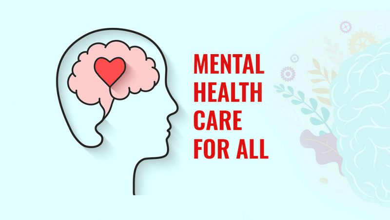
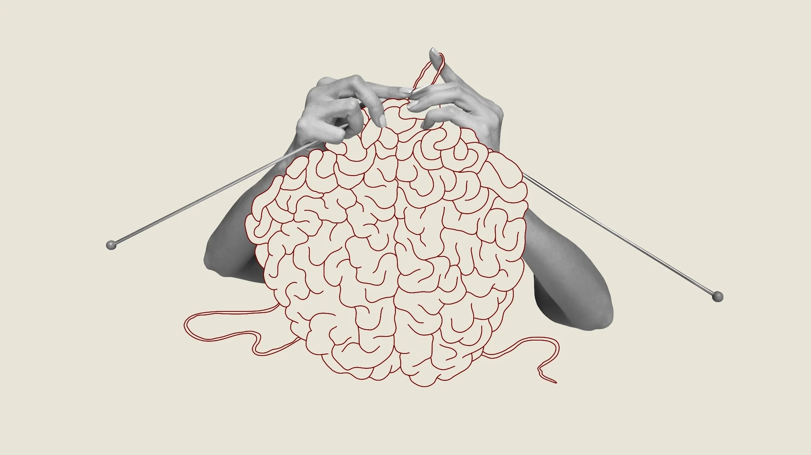

Mental health can have a significant impact on someone's overall well-being and quality of life. It affects how we think, feel, and behave, and can influence our relationships, work, and daily activities. When someone is experiencing poor mental health, it can manifest in various ways, such as:
1. Emotional Effects: Mental health issues can lead to intense emotions like sadness, anxiety, anger, or irritability. It may also cause a lack of motivation or interest in activities that were once enjoyable.
2. Cognitive Effects: Mental health problems can affect our ability to concentrate, make decisions, or remember things. It may also lead to negative thoughts or distorted thinking patterns.
3. Physical Effects: Mental health concerns can manifest physically, causing changes in appetite, sleep patterns, energy levels, or even physical symptoms like headaches or stomachaches.
4. Social Effects: Poor mental health can impact our relationships and social interactions. It may lead to withdrawal from friends and family, difficulty in forming or maintaining relationships, or a sense of isolation and loneliness.
5. Occupational Effects: Mental health issues can affect work performance, productivity, and job satisfaction. It may lead to difficulties in concentrating, completing tasks, or interacting with colleagues.
If you are struggling with Mental Health, please click this link below
Mental Health Resources Athlete Mental Health